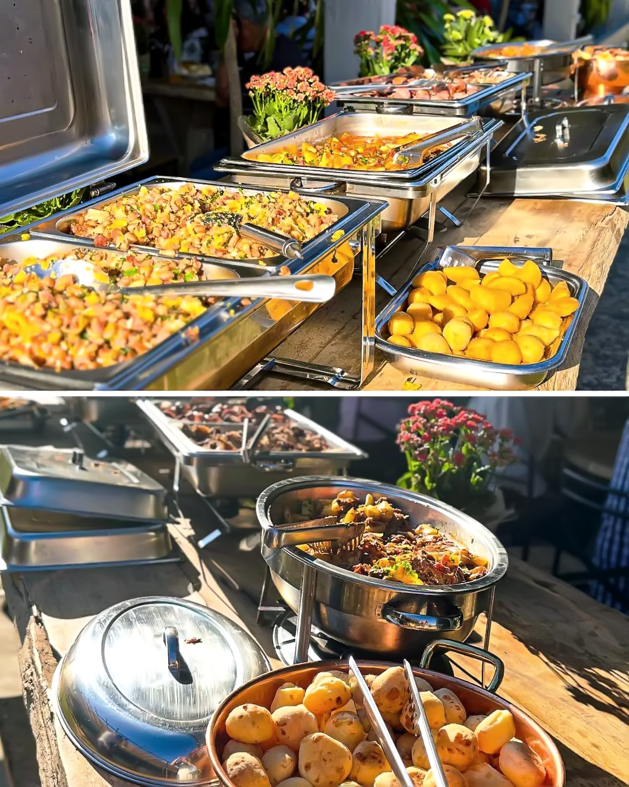
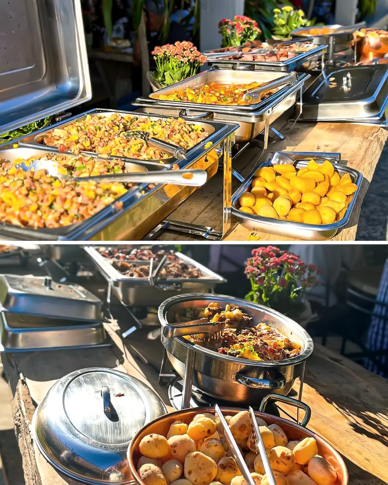

10º Expo Capeb - Mangalarga Marchador
O dia 07 de junho de 2025 encerrou com chave de ouro a 10ª Expo Capeb, com um super show da dupla Simão Breno & Júnior. A apresentação animou o público no Parque de Exposições de Boa Esperança (MG) e marcou o fim do evento com muita música e alegria. Uma noite inesquecível para os visitantes e apaixonados pelo Mangalarga Marchador.


 
